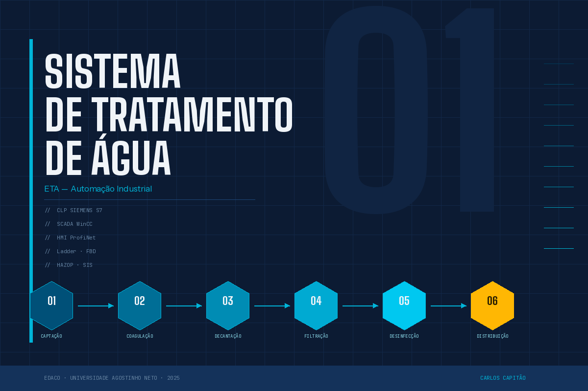

Industrial Automation for
Water Treatment Plant (WTP)
Sistema de Tratamento de Água (ETA)
com Automação Industrial

The ProblemO Problema
Traditional water treatment systems operate without adequate automation, resulting in low operational efficiency, difficulty maintaining consistent quality parameters, public health risks from undetected real-time failures, and high operational costs for chemicals and labour. Os sistemas tradicionais de tratamento de água operam sem automação adequada, resultando em baixa eficiência operacional, dificuldade em manter parâmetros de qualidade constantes, riscos à saúde pública por falhas não detetadas em tempo real, e alto custo operacional com químicos e mão-de-obra.
The SolutionA Solução
Integrated industrial automation system covering the 4 layers of the automation pyramid: field, control, supervision and operator interface. Sistema de automação industrial integrado cobrindo as 4 camadas da pirâmide de automação: campo, controlo, supervisão e interface com o operador.
Field LayerCamada de Campo
- Level, flow and pressure sensors (4-20mA)Sensores de nível, fluxo e pressão (4-20mA)
- pH, turbidity and residual chlorine analysersAnalisadores de pH, turbidez e cloro residual
- Dosing pumps and motorised valvesBombas doseadoras e válvulas motorizadas
Control Layer (PLC)Camada de Controlo (CLP)
- Ladder and FBD logic on Siemens S7 via TIA PortalLógica Ladder e FBD no Siemens S7 via TIA Portal
- Automated dosing of coagulants and chlorineAutomação da dosagem de coagulantes e cloro
- Safety interlock systemsIntertravamento de segurança (interlock)
- Automatic filter backwash controlControlo de retrolavagem automática dos filtros
SCADA SupervisionSupervisão SCADA
- Real-time visualisation of all processes (WinCC)Visualização em tempo real de todos os processos (WinCC)
- Data historian and trend analysisHistórico de dados e análise de tendências
- Alarm management with event loggingGestão de alarmes com registo de eventos
- Production and water quality reportsRelatórios de produção e qualidade da água
HMI InterfaceInterface HMI
- Process synoptics with status animationSinópticos de processo com animação de estado
- Manual/automatic control per zoneControlo manual/automático por zona
- Historical charts and alarm panelGráficos históricos e painel de alarmes
Automated Process FlowFluxo do Processo Automatizado
Technologies UsedTecnologias Utilizadas
| LayerCamada | TechnologyTecnologia |
|---|---|
| PLCCLP / PLC | Siemens S7 — TIA Portal |
| SCADA | WinCC / FactoryTalk |
| ProgrammingProgramação | Ladder (LD) · Function Block Diagram (FBD) |
| CommunicationComunicação | ProfiNet · ModBus TCP |
| InstrumentationInstrumentação | 4-20mA · 1-5V · 0-10V sensorsSensores 4-20mA · 1-5V · 0-10V |
| HMI | Graphical interface with process synopticsInterface gráfica com sinópticos de processo |
| SafetySegurança | HAZOP · SIS · InterlocksIntertravamentos |
Expected ResultsResultados Esperados
Water QualityQualidade da Água
Higher potability standards and regulatory compliance.Padrões mais elevados de potabilidade e conformidade regulatória.
Energy EfficiencyEficiência Energética
Estimated 25–30% reduction in electricity consumption.Redução estimada de 25–30% no consumo de energia elétrica.
Cost ReductionRedução de Custos
Precise automated chemical dosing eliminates waste.Dosagem automática e precisa de químicos elimina desperdício.
Operational SafetySegurança Operacional
Real-time alarms and interlocks prevent critical failures.Alarmes em tempo real e interlocks previnem falhas críticas.
Project TeamEquipa do Projeto
Supervisor:Orientador: Eduardo Yamba — EDACO